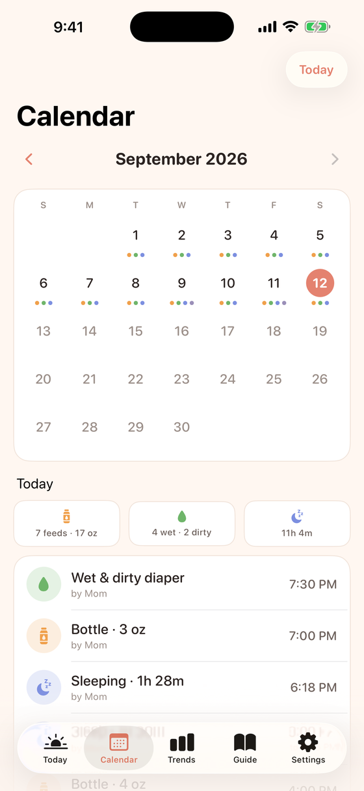
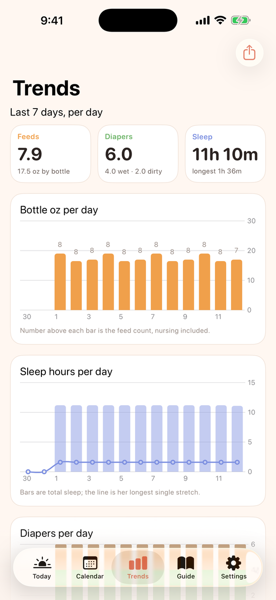
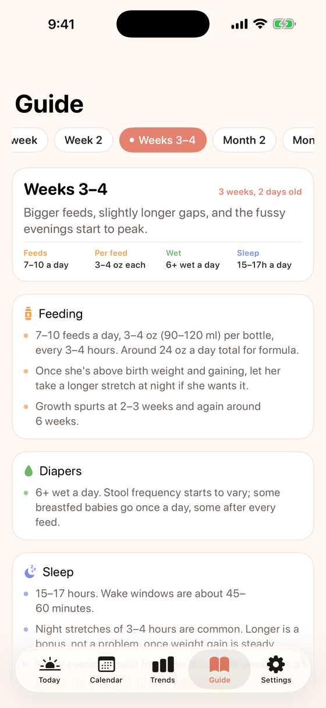

The app's name is the trigger word, so the phrases sound like something you'd actually say at 3 AM. Siri answers back so you know it landed. Nothing to set up.
Mina ate 4 ouncesMina nursed on the leftMina just peedMina poopedMina is asleepMina woke upMina weighs 7 pounds 4 ouncesWhen did Mina last eat?How many diapers has Mina had today?
Everything a first month throws at you
Bottle, nursing, diapers, sleep, notes, pumping, growth, medicine, tummy time, bath and temperature. Each one a tap, a widget button, or a sentence.
✨
Knows what's next
Learns her feeding rhythm and shows the next feed before she asks for it, plus the nap window for her age. Optional reminders.
📱
Widgets that do things
Home Screen buttons for the last bottle amount, pee, poop and sleep. Lock-screen glances for time since the last feed.
🗓️
Calendar and trends
A month at a glance, then 14 days of charts: ounces, sleep, longest night stretch, diapers. One tap makes a PDF for the pediatrician.
📖
What to expect, by age
Feeding, diapers, sleep, growth, milestones, checkups and when to call the doctor, from day one to month four. Tap a milestone when she does it.
🔔
Both parents in the loop
“Mom fed Mina: 4 oz bottle at 2:15 PM” lands on the other phone, so nobody has to ask.
📷
Nanit, optional
Connect a Nanit camera and its sleep and wake events become sleep entries on their own.
Today: what happened, what's next, one-tap logging

Calendar: a month of dots, tap a day for details

Trends: 14-day charts and a shareable report

Guide: ranges and milestones for her exact age
One log, two phones, zero servers
Mina uses iCloud sharing, the same thing Notes and Reminders use. Your log lives in your own iCloud, and you invite your partner once.
One of you opens the app, types the baby's name and birthday, and taps Start.
Settings → Share with your partner → send the invite by Messages.
Your partner opens the link. Mina opens with the same log, and every entry syncs both ways within seconds.
Private by construction
There is no Mina server. Nothing about your baby leaves Apple's iCloud, and only the people you invite can see it.
No account, sign-up, email or phone number.
No analytics, tracking or crash reporting.
No ads, no third-party SDKs, no network calls except iCloud (and Nanit, only if you connect it).
Data is stored on your phone and in your iCloud private database, encrypted in transit and at rest by Apple.